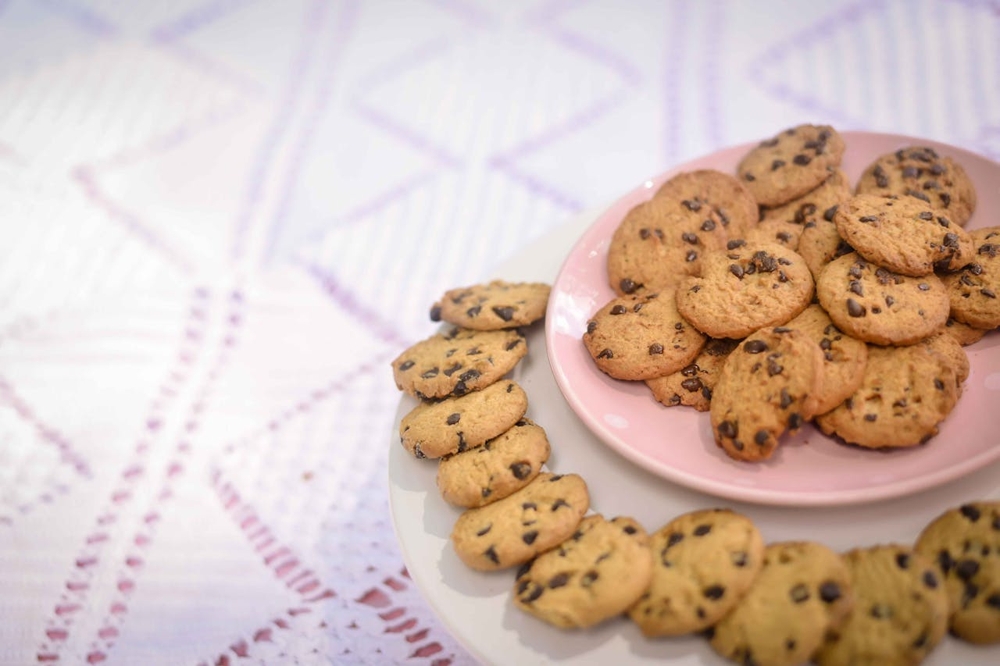

Cookies
Perfeito como snack ou para compor o café da tarde, essa receita é uma de nossas queridinhas, pois além de ser fácil de fazer, fica uma delícia!
Informações
- Tempo de preparo: 40 minutos
- Rendimento: 22 porções
- Dificuldade: Fácil
Ingredientes
- 125g de manteiga sem sal em temperatura ambiente;
- 1/2 xícara de açucar mascavo;
- 1 e 3/4 de xícara de farinha de trigo;
- 300g de chocolate meio amargo picado;
- 3/4 xícara de açucar;
- 1 ovo;
- 1 colher (chá) de fermento em pó;
- 1 colher (chá) de essência de baunilha.